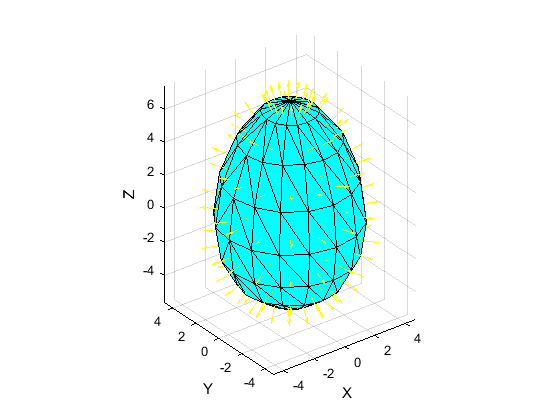
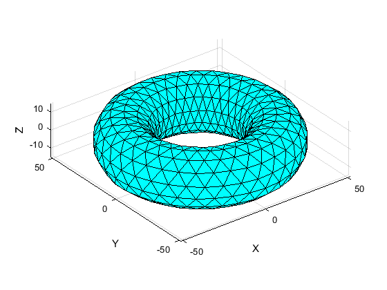

Contents
mesh generation toolbox
Author & support : nicolas.douillet (at) free.fr, 2020-2023.
addpath('src/');
Example #1 : mesh an icosahedron based geoid
id = 4; % base = icosahedron nb_it = 3; sampling_mode = 'face'; [V,T] = mesh_geoid(id,nb_it,sampling_mode); plot_mesh(V,T);
Example #2 : mesh a cylinder
[V,T] = mesh_cylinder(3,7,5); plot_mesh(V,T);
Example #3 : mesh an ovoid and select its face normals
[V,T] = mesh_ovoid(8);
select_face_normals(V,T); % beware : not all coherently oriented / facing outward
 Example #4 : mesh a torus with quasi equilateral triangles
longtude_nb_samples = 37;
latitude_nb_samples = 15; % odd number
[V, T] = mesh_torus_specific(longtude_nb_samples,latitude_nb_samples);
plot_mesh(V,T);
 Example #5 : (triangle) mesh a polygon
Hexagon of the 3D space
V1 = [-sqrt(2)/3 sqrt(6)/3 -1/3];
V3 = [-sqrt(2)/3 -sqrt(6)/3 -1/3];
V5 = [0 0 1];
V2 = (2/3)*(V1+V3) - (1/3)*V5;
V4 = (2/3)*(V3+V5) - (1/3)*V1;
V6 = (2/3)*(V1+V5) - (1/3)*V3;
P = cat(1,V1,V2,V3,V4,V5,V6);
[V,T] = mesh_polygon(P,'sorted');
plot_mesh(V,T);

Example #6 : discrete contour mesh patch
n = 32; V = 2*(rand(n,2)-0.5); H_raw = convhull(V); if size(V,2) == 2 V = cat(2,V,zeros(size(V,1),1)); end Rmx = @(theta)[1 0 0; 0 cos(theta) -sin(theta); 0 sin(theta) cos(theta)]; V = (Rmx(0.25*pi)*V')'; V = V(unique(H_raw,'stable'),:); V = V([end,end-1,1,2:end-2],:); % disorder ( = V_in) [C,T,N] = discrete_contour_mesh_patch(V); h = figure; set(gcf,'Color',[0 0 0]); subplot(121); plot3(C(:,1),C(:,2),C(:,3),'bo','LineWidth',4,'MarkerSize',6,'MarkerFaceColor', [1 0 1],'MarkerEdgeColor', [1 0 1]), hold on; xlabel('X'), ylabel('Y'), zlabel('Z'); axis equal, axis tight; set(gca, 'Color', [0 0 0], 'XColor', [1 1 1], 'YColor', [1 1 1], 'ZColor', [1 1 1]); view(3); subplot(122); plot3(C(:,1),C(:,2),C(:,3),'bo','LineWidth',4,'MarkerSize',6,'MarkerFaceColor', [1 0 1],'MarkerEdgeColor', [1 0 1]), hold on; line(cat(1,C(:,1),C(1,1)),cat(1,C(:,2),C(1,2)),cat(1,C(:,3),C(1,3)),'Color',[0 1 0],'LineWidth',4), hold on; trisurf(T,C(:,1),C(:,2),C(:,3)), shading faceted, hold on; colormap([0 1 1]); xlabel('X'), ylabel('Y'), zlabel('Z'); axis equal, axis tight; ax = gca; ax.Clipping = 'off'; set(ax, 'Color', [0 0 0], 'XColor', [1 1 1], 'YColor', [1 1 1], 'ZColor', [1 1 1]); view(3);